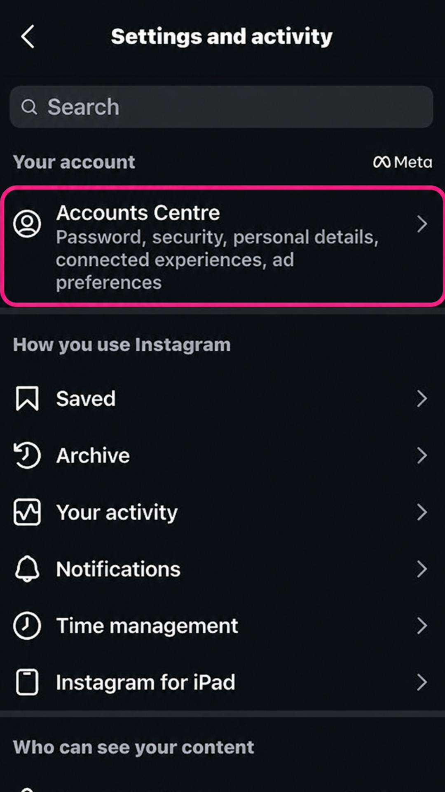
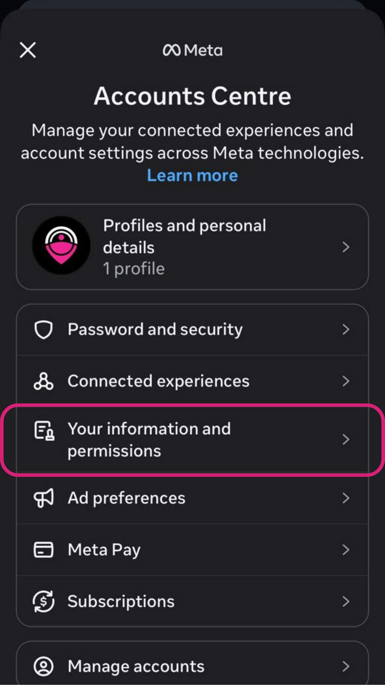
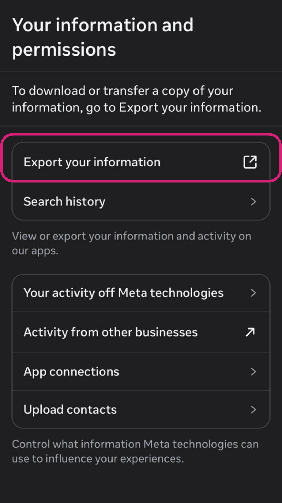
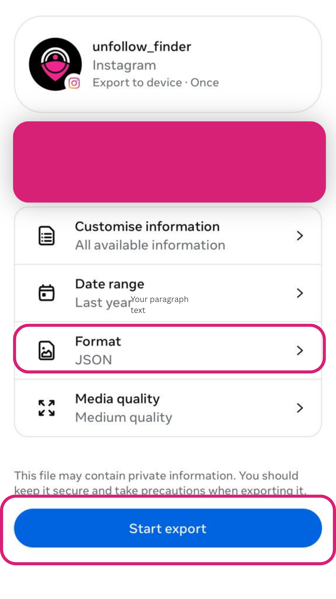
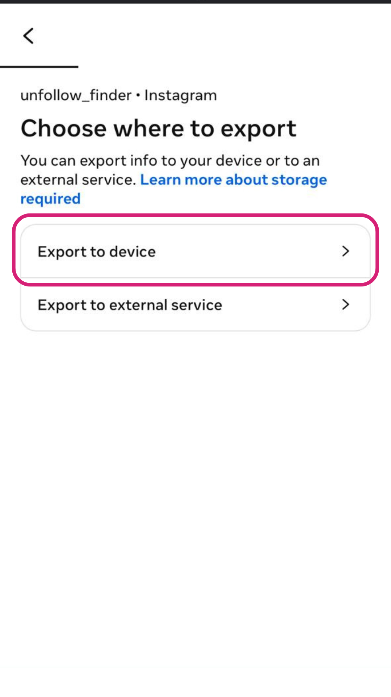
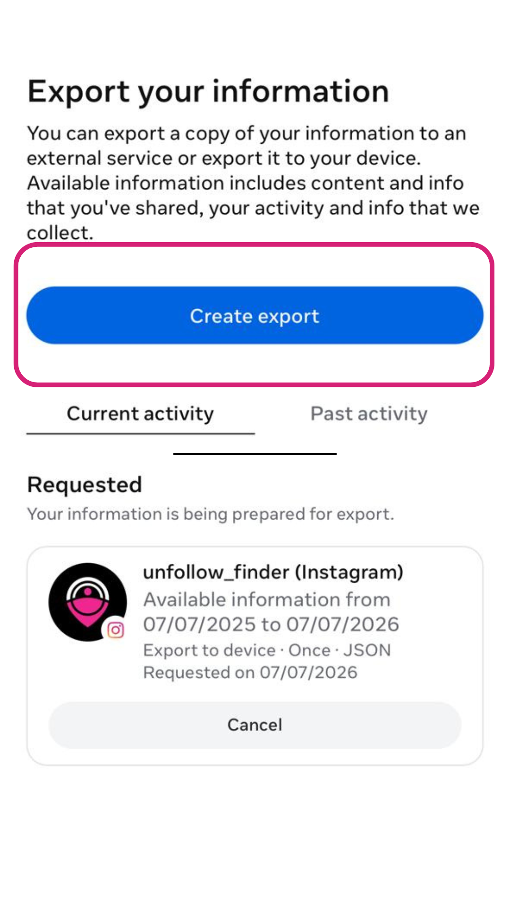
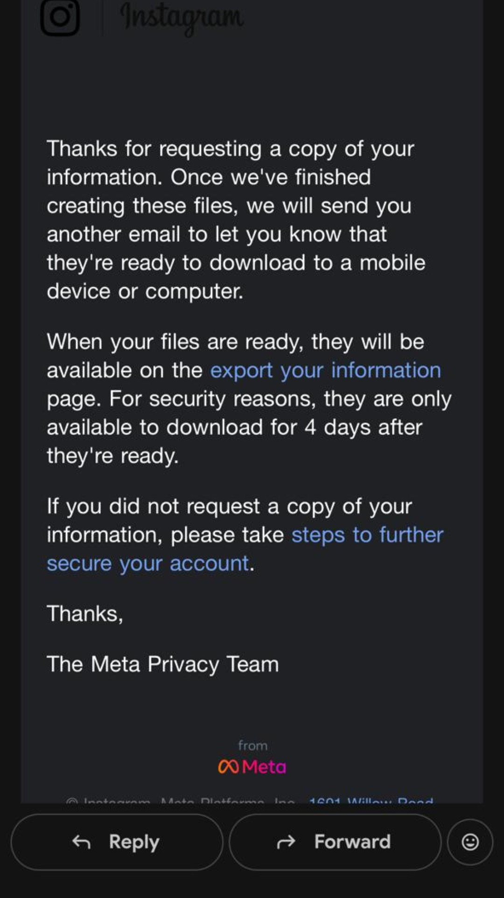
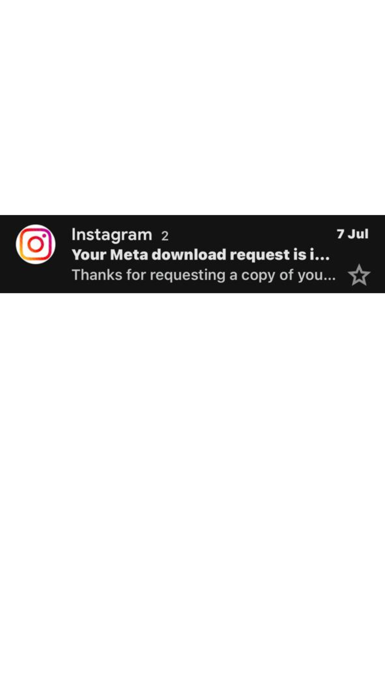
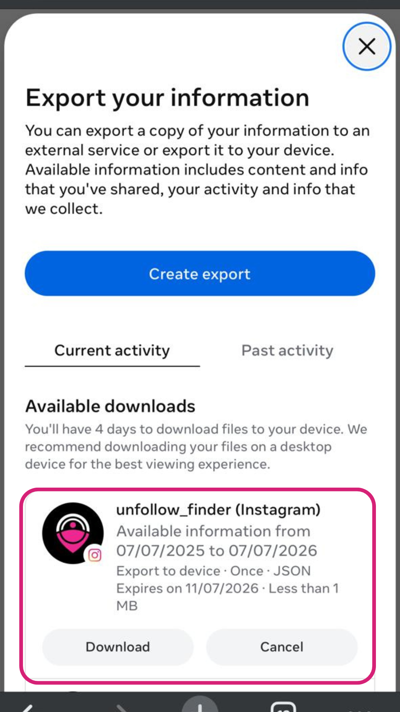

Instagram lets you download a complete copy of your own data — your followers, the accounts you follow, your posts, comments, messages, story archives, and much more. It's completely free, it's built right into the app, and it's the safest, most private way to access your own information.
Whether you want to see who unfollowed you, keep a personal backup, or simply understand what Instagram stores about you, this guide walks you through the entire process step by step — on both mobile and desktop — plus answers the most common questions people run into.
Why would you want to download your Instagram data?
Downloading your data unlocks a surprising number of useful things. Here are the most popular reasons people do it:
- See who unfollowed you — your complete followers and following lists are included, so you can compare them and spot who left.
- Find who doesn't follow you back — compare your following list against your followers to see the accounts that never returned the follow.
- Keep a personal backup — save all your posts, photos, videos, and messages in case you ever lose access to your account.
- Protect your privacy — access everything without ever handing your password to a third-party app.
- Audit your account — review your login history, past searches, ad interests, and the data Instagram has built about you.
- Move to another platform — export your content if you're switching or cross-posting elsewhere.
JSON vs HTML: which format should you choose?
When you request your data, Instagram asks whether you want it delivered in JSON or HTML format. This choice matters, so here's the difference in plain English:
- JSON — a structured, machine-readable format. Choose this if you plan to use a tool to analyze your data, such as checking who unfollowed you. Tools read JSON directly.
- HTML — a format you open in a web browser to read like a normal web page. Choose this only if you just want to browse your data visually and don't need any tools.
If your goal is to see who unfollowed you or who doesn't follow you back, always choose JSON. It's the format unfollower tools need to read your followers and following lists.
How to download your Instagram data on mobile (iPhone & Android)
The mobile app is the most common way to request your data. The steps are identical on both iPhone and Android.
Step 1 — Open your account settings
Open the Instagram app and tap your profile picture in the bottom-right corner to go to your profile. Tap the menu icon (three horizontal lines) in the top-right, then tap Settings and privacy.

Step 2 — Open the Accounts Centre
At the very top of the settings screen, tap Accounts Centre (on some accounts it shows as "Meta Accounts Centre"). Inside, tap Your information and permissions.

Step 3 — Tap "Download your information"
On the next screen, tap Download your information, then tap Download or transfer information.

Step 4 — Choose which account
If you manage more than one account, select the specific Instagram account you want to download data for, then tap Next.

Step 5 — Decide how much data you want
You'll see two choices. Select Some of your information if you only need your followers and following lists — this is much faster. Or choose All available information to download everything. If you picked "some," scroll down and select the Followers and following option.

Step 6 — Pick your download settings
Now choose Download to device. Then set the three options that appear:
- Date range: All time (to get your complete lists)
- Format: JSON
- Media quality: whatever you prefer — higher quality means a larger file

Step 7 — Submit your request
Tap Create files (it may say "Submit request" on some versions). Instagram will now start preparing your download in the background.

Step 8 — Wait for Instagram's email
Instagram will email you a secure download link once your file is ready. If you only requested your followers and following, this usually arrives within a few minutes. Larger requests (all your data) can take anywhere from a few hours up to 48 hours.

Step 9 — Download and unzip your file
Open the email from Instagram and tap Download. You may be asked to log in again for security. You'll receive a ZIP file — tap it to unzip and reveal your data folders.

How to download your Instagram data on desktop
Prefer using a computer? You can request your data from the Instagram website too:
- Go to instagram.com and log in.
- Click your profile, then Settings.
- Open Accounts Centre → Your information and permissions → Download your information.
- Follow the same format (JSON) and date-range steps as on mobile.
The desktop process is often faster to click through, and the ZIP file downloads straight to your computer — handy if you want to use an unfollower tool right away.
Where are your followers and following files?
Once you unzip the downloaded file, the folder structure can look a little confusing at first. Here's exactly where to look:
- Open the
connectionsfolder - Then open
followers_and_following
Inside, you'll find the two key files:
followers_1.json— everyone who follows youfollowing.json— everyone you follow

If you have a large number of followers, Instagram splits them across multiple files — followers_1.json, followers_2.json, followers_3.json, and so on. Make sure you keep all of them together.
What can you do with your data once you have it?
Your followers_1.json and following.json files hold everything you need to answer the questions Instagram itself won't tell you:
- Who unfollowed you — accounts you follow that don't follow you back
- Who doesn't follow you back — the one-sided follows in your list
- Your mutual followers — the accounts where you both follow each other
- Ghost followers — followers who never engage
The easiest way to turn these files into clear answers is to upload them to Unfollow Finder. It reads your files directly in your browser, which means your data never leaves your device and you never share your Instagram password. You'll see exactly who unfollowed you in seconds.
Is it safe to download your Instagram data?
Yes — completely. You're requesting your own data directly from Instagram through the official, built-in feature. Nothing about this process breaks Instagram's rules or puts your account at risk. The download link comes straight from Instagram to your registered email.
The only thing to be careful about is what you do after you download it. Avoid uploading your data to sketchy sites that ask you to log in with your Instagram password. A safe tool never needs your password — it only reads the files you already downloaded, ideally right in your browser.
Frequently asked questions
How long does it take to get my Instagram data?
If you only request your followers and following lists, it's usually just a few minutes. Requesting all of your information can take several hours, and in some cases up to 48 hours.
Does downloading my data notify anyone?
No. Downloading your own data is completely private. None of your followers or the people you follow are notified.
Why is my followers list split into multiple files?
Instagram caps the number of entries per file. If you have thousands of followers, they get split into followers_1.json, followers_2.json, and so on. This is normal — just keep all the files.
Can I download my data if my account is private?
Yes. Your account being private doesn't affect your ability to download your own data.
Do I have to pay for this?
No. Downloading your Instagram data is a free feature offered by Instagram to every user.
What if I lost the download email?
Just start the request again from your settings. The download links do expire after a few days for security, so if yours expired, simply request a fresh copy.
The bottom line
Downloading your Instagram data is quick, free, and completely safe — after all, it's your own information, delivered straight from Instagram. Choose the JSON format, wait for the email, unzip the file, and you'll have your complete followers and following lists ready to use.
From there, a privacy-first tool like Unfollow Finder can instantly turn those files into clear answers about who unfollowed you, who doesn't follow you back, and who your true mutuals are — all without ever asking for your password.